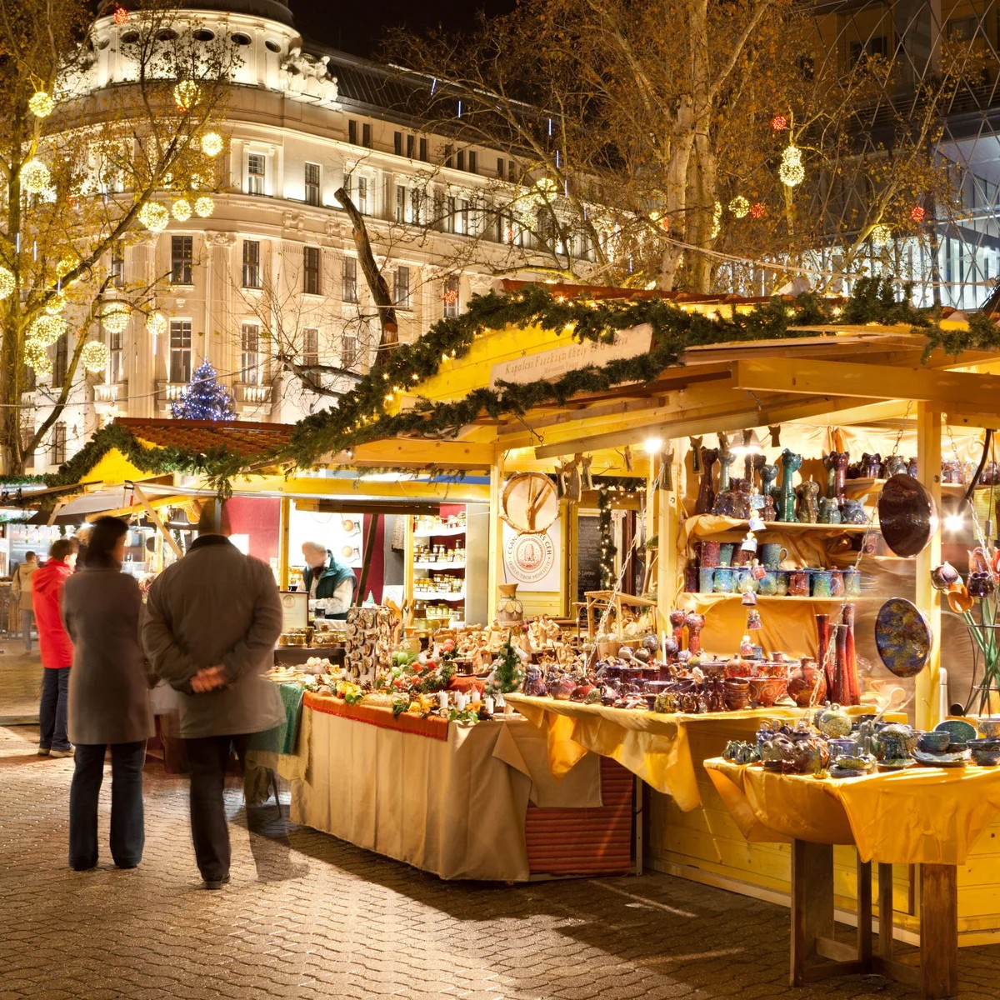
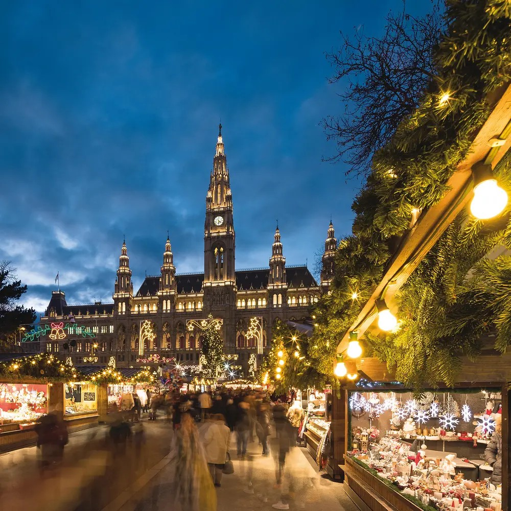
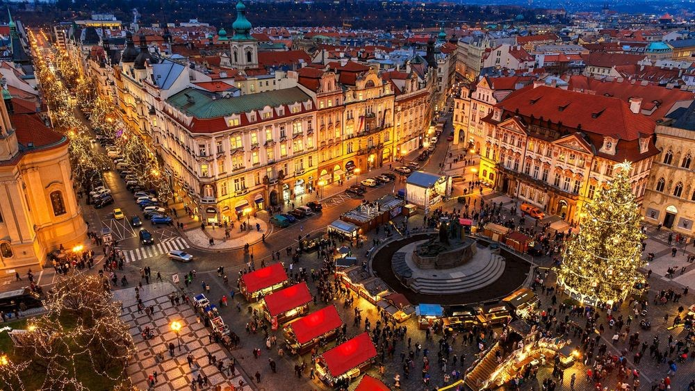
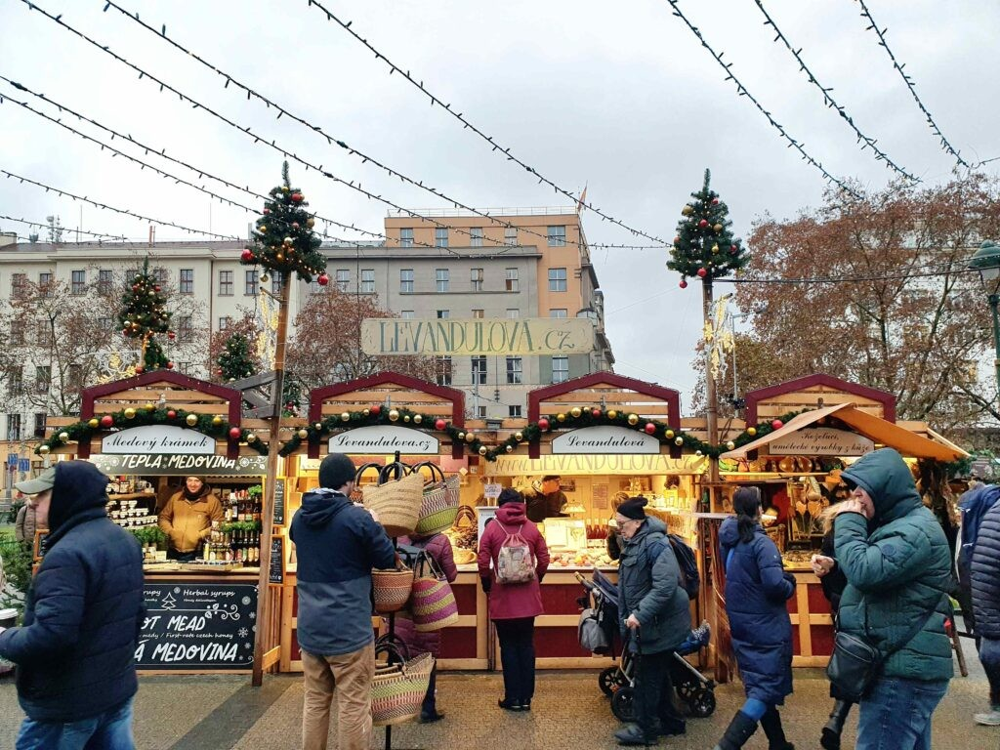

Budapest, Vienna and Prague, ranked and compared: what the markets are actually like, what things cost, how long you're flying for, how to get into town, and what else to do while you're there. I'm doing Budapest myself this November, so that one's had the closest look.
Every one of these is under three hours' flying time from the UK, which makes them an easy long weekend rather than a full week off work. All three do Christmas markets properly, wooden chalets, mulled wine, ice rinks, the lot, and all three are cheap enough that a couple of days there won't wreck your December budget.
I've ranked Budapest top. I'm heading out there myself this November, and once I'm back I'll be doing a full destination focus on it, so treat this as the taster. Vienna and Prague follow close behind, and honestly, you wouldn't go wrong with any of the three.
All three of these get busy fast once the markets open, especially weekends in December. If you want good flight prices and a hotel that isn't a 40-minute walk from everything, book sooner rather than later. Message me and I'll sort it.
| City | Flight time (UK, direct) | 2026/27 market dates | Airport into town | Price level |
|---|---|---|---|---|
| 1. Budapest | ~2h 25m | 14 Nov – New Year's Day | Express bus, ~40 min | Great value |
| 2. Vienna | ~2h 20m | 14 Nov – 26 Dec | City Airport Train, 21 min | Mid-range |
| 3. Prague | ~1h 40m | 28 Nov – 6 Jan | Airport bus + metro, ~30 min | Cheapest of the three |
Flight times are for direct flights from London and will vary a little by airline and UK departure airport. Market dates are the confirmed 2026/27 dates at the time of writing, always worth a quick check nearer the time in case a venue changes anything.
My pick for this year, and the one I'm going to be seeing for myself in November. Two proper markets, some of the best value food and drink of the three cities, and a skyline that looks incredible lit up for Christmas.

Budapest's two main markets run from around 14 November through to New Year's Day. The bigger one is at Vörösmarty Square, roughly 150 stalls, a proper food court, and the Gerbéaud advent calendar building lighting up a new window every evening. The second is outside St Stephen's Basilica, around 100 stalls, with a free 3D light show projected onto the Basilica itself after dark and a small ice rink. They're about a 10-minute walk apart and both sit right on Metro line M1, so hopping between the two is easy.
Entry to both is free, they're open on Christmas Eve and Christmas Day itself, and most stalls take card as well as cash.
Budapest is the best value of the three for food and drink. A chimney cake (kürtõskalács), the spiral pastry you'll see everywhere, is around 2,200 HUF (roughly £5), and a mulled wine (forralt bor) is around 1,500–2,000 HUF (roughly £3.50–£4.50).
Direct flights from the UK take around 2 hours 25 minutes. From Budapest Airport, the cheapest way in is the 200E bus + train combo (around 35 minutes, roughly £2), or the more straightforward 100E express bus straight to Deák Ferenc tér in the centre, around 40 minutes for roughly £4.75. A taxi takes about 35 minutes from around £24.
Buy the 100E express bus ticket from the machine at arrivals before you go looking for a taxi rank, it's the easiest and one of the cheapest ways into the centre, and it drops you right by the metro.
Budapest is a genuinely brilliant winter city break outside the markets too. The Széchenyi Thermal Baths are the big one, 18 indoor and outdoor pools heated to 30–40°C, properly magical sat outside in the steam while it's freezing above the water. The Hungarian Parliament Building is one of the most striking buildings I've seen anywhere, and you can book a guided tour inside. Climb the tower at St Stephen's Basilica for views over the whole city, and if you've got kids with you, City Park's ice rink is the largest outdoor rink in Europe.

The classic, grand European Christmas market experience. Slightly pricier than Budapest and Prague, but the Rathausplatz market is genuinely one of the best in Europe.

The main market at Rathausplatz, right in front of Vienna's City Hall, runs from 14 November to 26 December, open 10:00–21:30 Sunday to Thursday and until 22:00 on Fridays and Saturdays (it closes at 16:00 on Christmas Eve). It's on the U2 metro line at Rathaus station. Over 100 stalls, a striking illuminated "Heart Tree" installation, a 3,000 sqm ice rink, and rides for kids including a carousel and Ferris wheel. It draws over 3 million visitors across the season, so for the calmest visit go around twilight, 4:00–5:30pm, and avoid Friday and Saturday evenings between 6:30 and 9:30pm if you don't like crowds.
A Glühwein is around €4–5 (there's usually a €4 mug deposit you get back), a Punsch €5–7, sausages €5–7, langos €8–12, and a Kaiserschmarrn €8–12. Ice skating is around €6–10 with skate hire on top.
Direct flights from the UK take around 2 hours 20 minutes. From Vienna Airport, the City Airport Train (CAT) is the way in, a direct, non-stop 21-minute run to Wien Mitte in the city centre, running every 12–15 minutes, from around £6 (€7).
Schönbrunn Palace, the Habsburgs' old summer residence, is unmissable, the Imperial Tour of 22 rooms is around £24 (€28) and the gardens are free to wander. The Hofburg Imperial Palace and Sisi Museum comes in around £15 (€17.50). Art fans should head to the Kunsthistorisches Museum or the Belvedere Palace, home to Klimt's The Kiss. Climbing St Stephen's Cathedral's South Tower is a cheap way to get one of the best views in the city, and standing tickets for the Vienna State Opera go on sale 80 minutes before each performance from around £11–16.
The shortest flight of the three and one of the prettiest old towns in Europe, lit up for Christmas. Great for a genuinely cheap weekend away.

Prague's markets at Old Town Square and Wenceslas Square run 28 November 2026 to 6 January 2027, daily from 10:00 to 22:00, free entry. Old Town Square is the one to see, a 26-metre spruce dressed in around 95,000 LED lights, with a tree-lighting ceremony most evenings between 16:30 and 21:30. Both squares are within five minutes of a metro or tram stop.
Prague is the cheapest of the three. Sväřák (mulled wine) is around 100 CZK (roughly £3.40), a trdelník around 100 CZK (£3.40), a sausage in a baguette around 150 CZK (£5), and a 0.4L beer around 80 CZK (£2.70), which is about as cheap as Christmas market beer gets in Europe.
Direct flights from the UK take around 1 hour 40 minutes, the shortest hop of the three. From Prague Airport, the 59 trolleybus gets you to Veleslavín in about 15 minutes, connecting onto Metro line A into the centre; buy your ticket from a machine or the PID Lítačka app before boarding.
Prague Castle, the largest ancient castle complex in the world, includes St Vitus Cathedral and is worth a half day on its own. Charles Bridge is free to walk any time, best early morning before the crowds arrive. Back in Old Town Square, the Astronomical Clock puts on an hourly show from 9am to 11pm. For the best views in the city with far fewer crowds than the castle, climb the Petřín Tower, and the Jewish Quarter is close by for an afternoon of synagogues and history.

Budapest. The cheapest food and drink, two excellent markets a short walk apart, and a city that's stunning lit up at night. I'll have a full destination guide up once I'm back from mine this November.
Vienna. Grand, polished, and the Rathausplatz market is one of the best-known in Europe for a reason. A little pricier, but worth it.
Prague. Under two hours in the air and the cheapest city break of the three, with an old town that looks like a Christmas card.
Flights, hotels and the whole trip, sorted properly. Message me and tell me which city's calling you.
Once I'm back from Budapest this November I'll be putting together a proper destination guide with everything I actually found out while I was there. In the meantime, if any of these three has caught your eye, get in touch and I'll start putting a trip together.